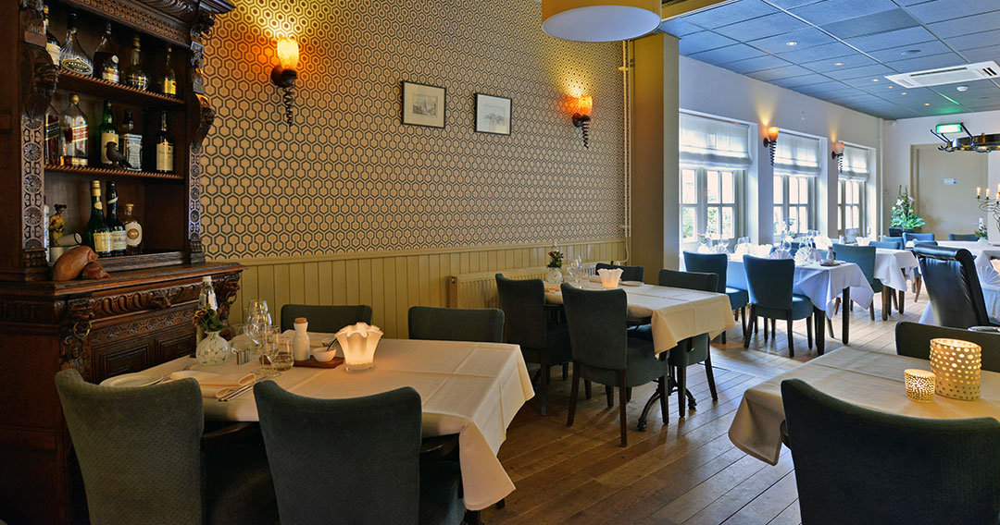
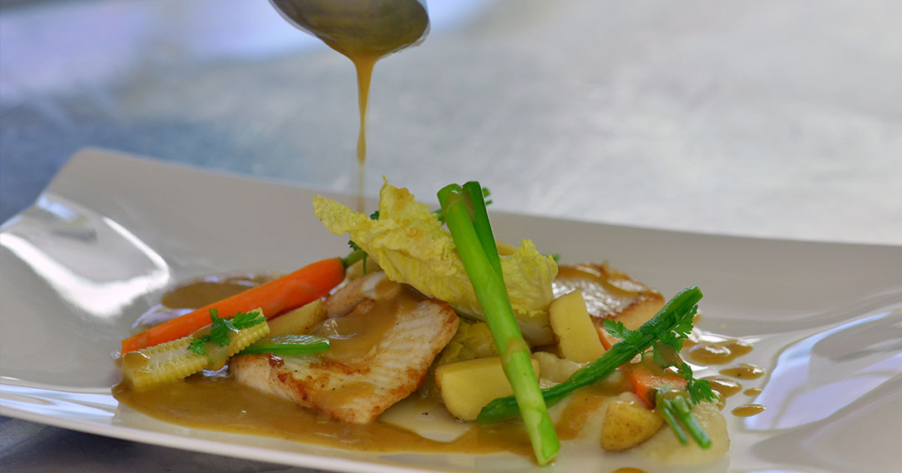
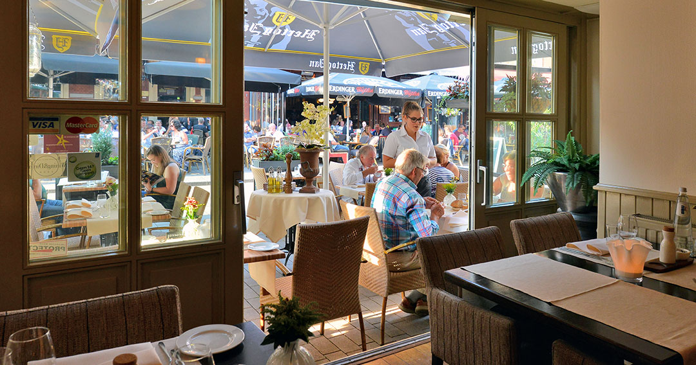
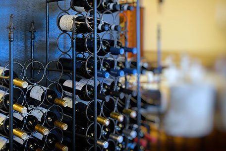
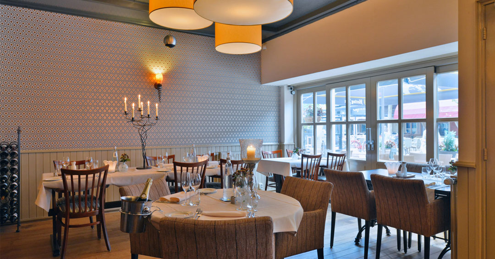

Brasserie Restaurant aan de Heuvel, Tilburg
L'Orangerie
U bent van harte welkom om smaakvol bij ons te komen genieten!
Woensdag t/m zondag 17:00–21:30


Een typisch Tilburgs restaurant
L'Orangerie is een typisch Tilburgs restaurant. Wij, Jan & Marc en ons team, bieden u een culinair avondje uit in een gemoedelijke Brabantse sfeer waar de gast echt centraal staat! Wij zijn er voor groepen, stelletjes en gezinnen. Iedereen is welkom!
Lekker laagdrempelig qua prijs en toch op goed niveau dineren. Van ons L'Orangerie menu en seizoensgebonden specialiteiten, tot een 3- of 4-gangenmenu door u samengesteld. Gewoon lekker vers en lokaal. Eet smakelijk!

Eten & drinken
Bij L'Orangerie zal iedere gast zich welkom voelen en zich kunnen vinden in onze menukaart. Een ruime keuze voor de vlees- en visliefhebber, en uiteraard zijn wij onze vegetarische gasten niet vergeten. Wij werken vaak samen met lokale ondernemers; wij zijn trots op wat Brabant te bieden heeft.
À la carte
- Vers gebakken brood met olijfolie, kruidenboter en aioli€ 7,50
- Zeeuwse oesters, L'huître de Zélande€ 3,50 p/st
- Plankje Serranoham€ 15,75
- Carpaccio met truffeldressing, rucola en Parmezaanse kaas€ 15,75
- Gerookte paling en gerookte zalm met focaccia en kappertjesmayonaise€ 17,75
- Tataki van kalfsrosbief met remouladesaus€ 15,75
- Klassieke Hollandse garnalenkroketten met peterseliemayonaise€ 17,50
- Crémeux van gepofte paprika met fetakaas, olijven en crème van avocado€ 14,75
- Soup du jour: wisselende soep van het seizoen€ 12,75
- Pikante gamba's, gebakken in knoflookolie met Spaanse peper€ 15,75
- Escargots à la Bourguignonne, slakken in kruidenboter met brood€ 13,75
- Kogelbiefstuk (175 gr) van Broeders met bordelaisesaus en zwarte knoflook€ 29,75
- Eendenborstfilet met Grand Marnier-saus€ 24,75
- Kabeljauw uit de fjorden met beurre blanc en krokante Serranoham€ 25,75
- Runder rib-eye (200 gr) met reuzegarnaal en cognacsaus€ 32,50
- Vangst van de dag: dagelijks wisselend visgerecht€ 25,75
- Provençaalse tartelette met crème van gepofte paprika (vegetarisch)€ 23,75
Alle hoofdgerechten worden geserveerd met seizoensgroenten, frietjes en mayonaise. Extra portie friet € 3,75.
- Dame blanche: vanille-ijs met slagroom en saus van Belgische chocolade€ 12,75
- Clafoutis: variatie op een klassiek Frans gebak met perzik en yoghurtijs€ 13,75
- Crema catalana: fruitige custard met krokant gebrand suikerlaagje en sinaasappelroomijs€ 14,50
- Kaasplankje: vier stuks van onze biologische kazen met brood en garnituur€ 15,75
- Scroppino: frisse combi van prosecco, citroensorbetijs en wodka€ 11,75
- Espresso martini: een koude koffiecocktail met wodka, espresso en koffielikeur€ 9,50

Neem ook eens, geheel vrijblijvend, een kijkje in onze wijnkaart: een bijzondere selectie van uitstekende wijnen, en wij adviseren u graag over passende wijn-spijscombinaties.
Kerstdiner 2026
Voorgerechten
Proeverij van gerookte zalm, palingmousse en Hollandse garnalenkroketje
Hertencarpaccio met geroosterde hazelnoot, wildpaté en een dressing van blauwe bes met balsamico
Tussengerecht
Pastinaaksoep met witte chocolade en een vulling van eendenconfit en truffel
Hoofdgerechten
Duo van kalfsoester en kalfswang met armagnacsaus en bospaddenstoelen
Tongscharfilet met langoustinesaus en rivierkreeftstaartjes
Hertenbiefstuk met saus van rode wijn en arabicakoffie
Spoom
Frisse combinatie van mango-passievruchtsorbetijs met prosecco en wodka
Dessert
Kerstdessert L'Orangerie
€ 69,50 per persoon
Uiteraard houden wij rekening met eventuele allergieën of dieetwensen die u vooraf aan ons bekendmaakt.
Wij nemen alles uit handen, u regelt het genieten
Om onze gasten nog beter culinair en op maat te verwennen bieden wij het L'Orangerie menu: u stelt zelf uit onze kaart uw eigen 3- of 4-gangenmenu samen. Heeft u speciale wensen? Vraag onze gastheer of gastvrouw om advies. Wij zullen er alles aan doen om zoveel mogelijk aan uw wensen tegemoet te komen.

De Tuinkamer tot 36 personen
Voor familie-aangelegenheden, een lunch- of dinervergadering of bedrijfspresentaties kunt u onze sfeervolle Tuinkamer reserveren, die plek biedt aan groepen tot 36 personen. Ideaal voor eindejaarsborrels, recepties, lunch- en dinervergaderingen en presentaties.
Groepen
- Feesten
- Wij weten wel raad met feestjes. We denken graag mee, van rustige achtergrondmuziek tot opzwepende beats. Kom gerust eens ideeën met ons uitwisselen.
- Borrelen
- Lekker borrelen moet eenvoudig zijn, vinden wij. Een heerlijk koud glas bier of een mooi glas wijn. Zelfgemaakte bitterballen en uiteraard uit te breiden met diverse bourgondische hapjes.
- Recepties
- Een receptie moet lekker ontspannen zijn. U zorgt voor het gezelschap, wij regelen de rest. U bent van harte welkom!
Zakelijk
Zakelijke lunch, of de juiste presentatie: wij regelen het! Wij hebben veel ervaring met zakelijke partijen. Hierin staat maar één ding centraal: ontzorgen.
- Zakelijk lunchen & dineren
- Genieten van een geheel zelf samengestelde lunch? Of liever een 3-, 4- of zelfs 5-gangendiner met bijpassend wijnarrangement? Wij luisteren graag naar uw wensen.
- Presentaties
- Een presentatie, maar dan net even anders: netjes aangekleed en geheel voorzien van een hapje en drankje. Onze afgeschermde Tuinkamer leent zich hier uitstekend voor. Eventuele toebehoren zoals flipovers en beamers dient u zelf te regelen.
- Bedrijfsfeesten
- Uw bedrijf heeft een mijlpaal bereikt? Reden voor een feestje. Vrolijkheid, eten, drinken en muziek. Wat wilt u nog meer?
- Vergaderen
- Ons restaurant leent zich voor zowel grote als kleine groepen, altijd voorzien van eten, drinken en sfeer. Op loopafstand van diverse parkeergarages en uitstekend bereikbaar in hartje Tilburg.
Al meer dan 20 jaar eten, drinken, lachen en volop genieten
Wij vinden dat passie en plezier geuit mogen worden. Alleen goed eten is onvoldoende: gastheerschap met een glimlach, de juiste muziek en aankleding zijn minstens zo belangrijk. Wij verrassen u graag!
Bij ons is iedereen welkom. Wij bieden gezellige tafeltjes voor u en uw partner of gezin, maar ook grotere tafels en zelfs een complete ruimte, De Tuinkamer. Binnen genieten met een rustig achtergrondmuziekje, of buiten op ons overdekte en verwarmde terras aan de Korte Heuvel.
Wat gasten zeggen
Wij hebben erg goed gegeten. We hadden gekozen voor een 4 gangen menu en daarbij 'n heerlijke rode wijn. De sfeer was weer geweldig, super genoten van een heerlijke avond.
Yvon
Gastvrij ontvangen. Hadden iemand met dieet wensen was geen enkel probleem. Werd goed meegedacht. Lekker gegeten, zeker genoeg en gezellig.
Henk
Vriendelijke ontvangst. Erg lekkere gerechten die prachtig werden gepresenteerd. Zeer goed advies bij het kiezen van de wijnen. Prima prijs/kwaliteit-verhouding. Alles bij elkaar een echte aanrader.
Joop
Een 4 gangen diner. Voortreffelijk van smaak en eetbare porties. We konden het menu zelf samenstellen. Ruime keuzes per gang.
Kees Loon
Reserveren
En wanneer zien we u aan tafel? Bel of mail ons, dan zorgen wij voor een plek.
013 - 543 11 32 info@lorangerietilburg.nlOpeningstijden
| Maandag | gesloten |
|---|---|
| Dinsdag | gesloten |
| Woensdag | 17:00–21:30 |
| Donderdag | 17:00–21:30 |
| Vrijdag | 17:00–21:30 |
| Zaterdag | 17:00–21:30 |
| Zondag | 17:00–21:30 |
Adres
L'OrangerieHeuvel 39
5038 CS Tilburg Route plannen